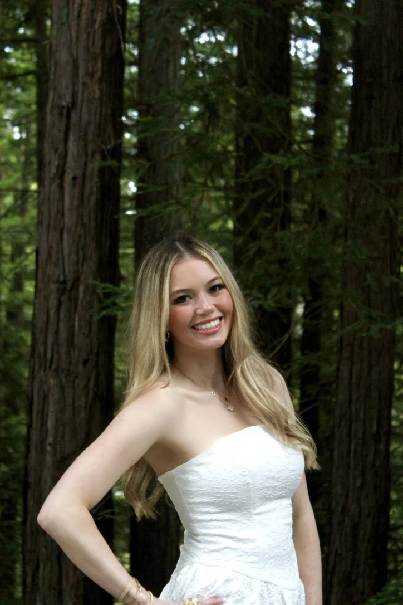
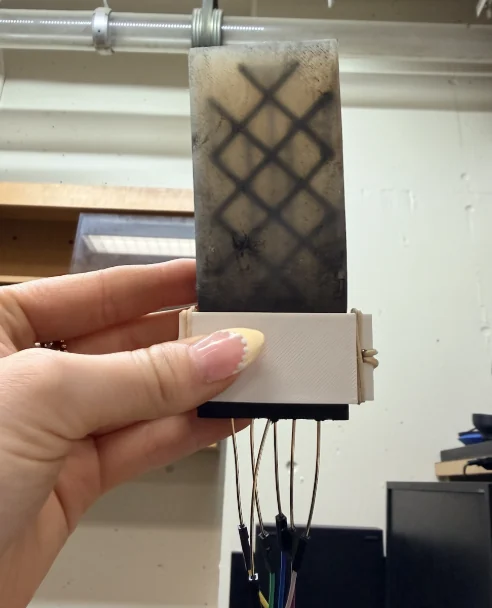
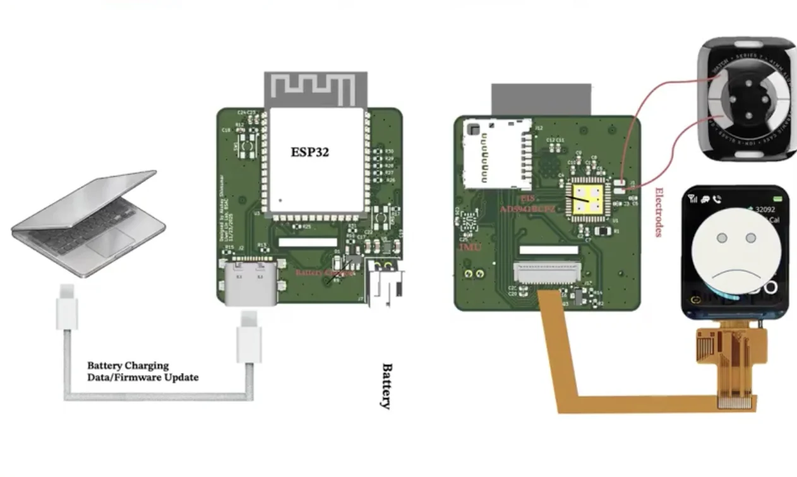
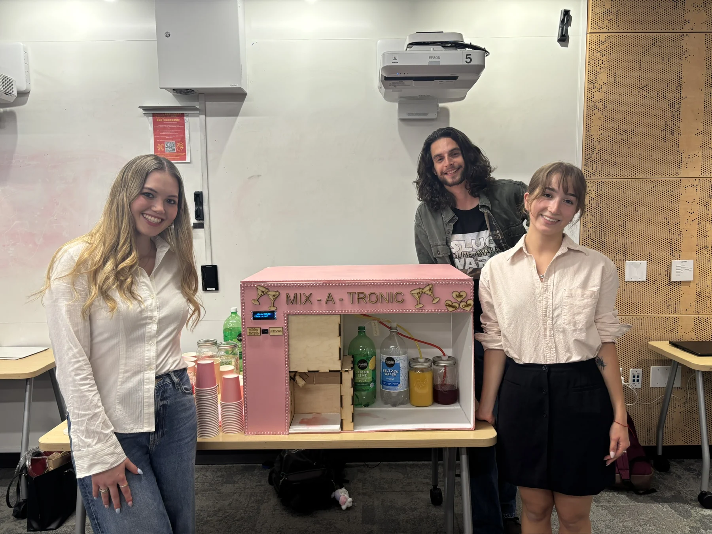
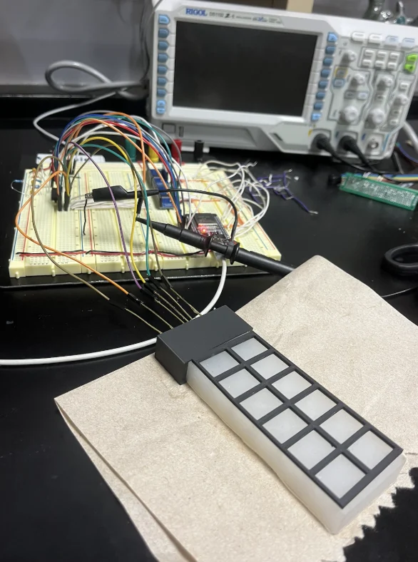
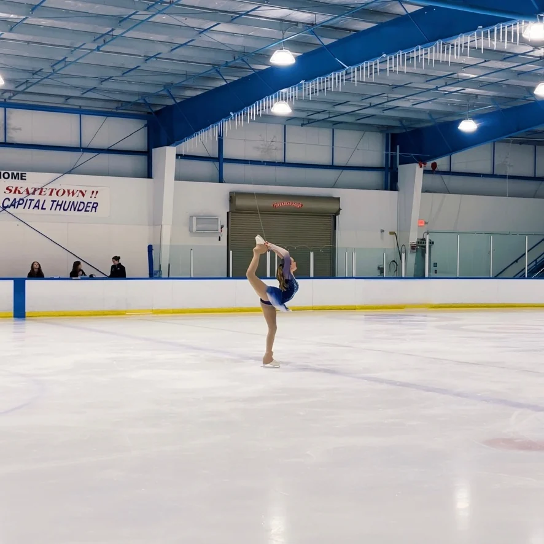

Hi, I'm Cassie.
I design and build robotic systems, sensors, and embedded hardware. I’m currently pursuing my M.Eng. in Mechanical Engineering at UC Berkeley, focusing on control of robotic and autonomous systems.
My favorite part of engineering is taking an idea from CAD and prototyping through testing and a working system.

B.S. Robotics Engineering, UC Santa Cruz · M.Eng., UC Berkeley
Selected projects
Hardware, sensors, mechanical design, and control systems. Click a project to see more photos and technical details.

Soft Tactile Sensor Research
Flexible pressure sensor using a diamond lattice, silicone, and conductive materials.

Wearable Sweat Sensing
Developing hardware and test methods for noninvasive sweat-based monitoring.

ProMotion Prosthetic Suspension
Adaptive ankle-foot suspension combining mechanical design and embedded control.

Mix-A-Tronic Bartender Robot
An automated drink dispensing robot designed and built with a student team.

Gesture-controlled game
A glove built with flex sensors, an IMU, and a vibration motor recognizes hand gestures to control a Python game. Watch the demo and explore the electronics.
Watch Project Video ↗UCSC alumna spotlight
Read my alumni feature from UC Santa Cruz Baskin Engineering.
Read My Alumna Story ↗Cassie Gallogly · Alumna
Baskin Engineering alumni feature
Visit Feature ↗
Life on the ice
I'm also a competitive figure skater and professional skating coach. Coaching has strengthened my communication, leadership, and problem-solving skills, all of which carry into my engineering work.
More About Me ↗Contact Me
Interested in collaborating or discussing an engineering opportunity?